4450C28 FRONT WHEEL HUB,LEFT OR RIGHT - R.R WITH WHEEL REMOVED, CHECK WHEEL GEOMETRY SEPARATELY
- Path
- Procedures > 44 SUSPENSION AND WHEELS > 4450 HUBS AND WHEELS > 4450C FRONT WHEEL HUBS > 4450C28 FRONT WHEEL HUB,LEFT OR RIGHT - R.R WITH WHEEL REMOVED, CHECK WHEEL GEOMETRY SEPARATELY
- Kind
- repair procedure (removal / refitting; the operation number is the code)
- Applies to
- all engines; all production periods
- Interactive page
- https://sloeber94.github.io/elrnDB-fCrm/en/#/194000567
Applies to: all engines; all production periods
 Removing
Removing
 Refitting
Refitting- Position the vehicle on a lift.
Op. 4450B02 LEFT FRONT WHEEL - R.R
Op. 3310A48 FRONT BRAKE DISC (ONE), LEFT OR RIGHT - R.R
1. Remove the front wheel hub cap.
2. Undo the nut (2a) securing the front drive shaft to the wheel hub using the tool (2b) for counter-torque.
Tool | Description | Function | Validity |
|---|---|---|---|
1870815000 | Counter-torque | Loosen/tighten nut securing front driveshaft to wheel hub |
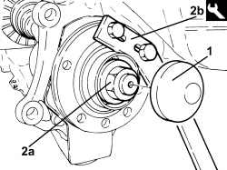
Applies to: all engines; all production periods
1. Undo the bolts fixing the front suspension shock absorber to the steering knuckle.
2. Disconnect the electrical connection for the wheel rpm sensor.
Description | Connector | |
|---|---|---|
2 | Left front wheel sensor for ABS |
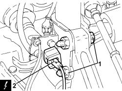
Applies to: all engines; all production periods
1. Undo the nut fixing the steering rod to the front steering knuckle.
2. Disconnect the steering rod (2a) from the front steering knuckle using the tool (2b).
Tool | Description | Function | Validity |
|---|---|---|---|
1871000700 | Extractor | Extracting steering rod from steering knuckle |
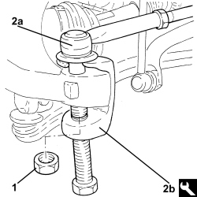
Applies to: all engines; all production periods
1. Use the tool to move the driveshaft back from the wheel hub.
Tool | Description | Function | Validity |
|---|---|---|---|
2000001600 | Extractor | Retract driveshaft from front wheel hub |
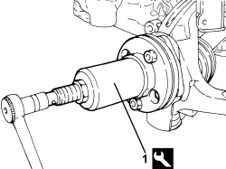
Applies to: all engines; all production periods
1. Undo the bolt (1a) and disconnect the lower track control arm for the front suspension (1b) from the steering knuckle pulling it downwards.
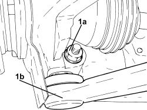
Applies to: all engines; all production periods
- Remove the steering knuckle complete with front wheel hub.
1. Place the steering knuckle complete with front wheel hub in a vice fitted with protective jaws.
2. Undo the bolts (2a) and remove the front wheel hub (2b) with built in wheel rpm sensor from the steering knuckle.
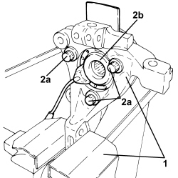
Applies to: all engines; all production periods
Refitting
Removing1. Fit the front wheel hub (1a) with built in wheel rpm sensor on the steering knuckle and secure it tightening the new bolts (1b) to the recommended torque.
Component | Fastening | dia | Value (daNm) | Validity |
|---|---|---|---|---|
Front wheel hub | Bolt (to be replaced) | M10 | (steering knuckle side) 9.0 - 11.0 + 60° |
2. Remove the steering knuckle complete with front wheel hub from the vice.
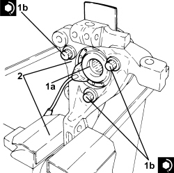
Applies to: all engines; all production periods
- Place the steering knuckle complete with front wheel hub in its housing.
- Refit the drive shaft in its seat on the wheel hub and secure by screwing in a new nut without tightening.
1. Connect the lower track control arm (1a) to the front hub steering knuckle and tighten a new bolt (1b) to the specified torque.
Component | Fastening | dia | Value (daNm) | Validity |
|---|---|---|---|---|
Front suspension lower track control arm | Bolt (to be replaced) | M10 | (steering knuckle side) 2.7 - 3.3 + 60° |
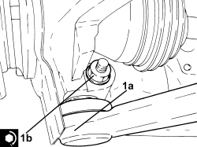
Applies to: all engines; all production periods
1. Tighten the new nut (1a) securing the front driveshaft to the wheel hub using the tool (1b) for counter-torque following the instructions given below.
Tool | Description | Function | Validity |
|---|---|---|---|
1870815000 | Counter-torque | Loosen/tighten nut securing front driveshaft to wheel hub |
- Tighten the nut to a pre-torque of 12.0 - 18.0 daNm.
- Loosen it by 45°.
- Tighten to 22.5 - 27.5 daNm.
2. Refit a new front hub cap in place using the appropriate tool.
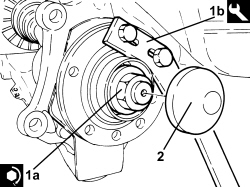
Applies to: all engines; all production periods
1. Connect the steering rod (1a) to the front hub steering knuckle and tighten a new bolt (1b) to the specified torque.
Component | Fastening | dia | Value (daNm) | Validity |
|---|---|---|---|---|
Steering rods | Nut | M12 | (steering knuckle side) 3.0 - 4.0 |
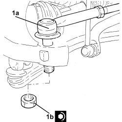
Applies to: all engines; all production periods
1. Connect the electrical connection for the wheel rpm sensor.
2. Tighten the new bolts fixing the front suspension shock absorber to the steering knuckle to the recommended torque.
Component | Fastening | dia | Value (daNm) | Validity |
|---|---|---|---|---|
Front shock absorber | Bolt (to be replaced) | M12 | (steering knuckle side) 7.7 - 9.4 +75° |
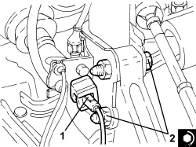
Applies to: all engines; all production periods
Op. 3310A48 FRONT BRAKE DISC (ONE), LEFT OR RIGHT - R.R
Op. 4450B02 LEFT FRONT WHEEL - R.R
- Remove the vehicle from the lift.
Topics linked from this page (3)
- 3310A48 FRONT BRAKE DISC (ONE), LEFT OR RIGHT - R.R
- 4450B02 LEFT FRONT WHEEL - R.R
- K070 LEFT FRONT WHEEL SENSOR FOR ABS
Topics that link to this page (5)
- S017 FRONT SUSPENSION NOISE (WHISTLING/HUMMING)
- S019 FORECARRIAGE TRANSVERSE VIBRATIONS
- 3340A30 RPM SENSOR (ONE) FOR ONE FRONT WHEEL, LEFT OR RIGHT - R.R.
- 4450C10 FRONT STEERING KNUCKLE (ONE), L/H OR R/H COMPLETE WITH WHEEL HUB - R+R WITH WHEEL REMOVED - CHECK WHEEL GEOMETRY SEPARATELY
- 4450C32 ONE FRONT WHEEL HUB BEARING, LH OR RH - REPLACE